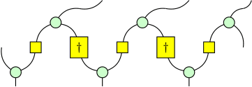
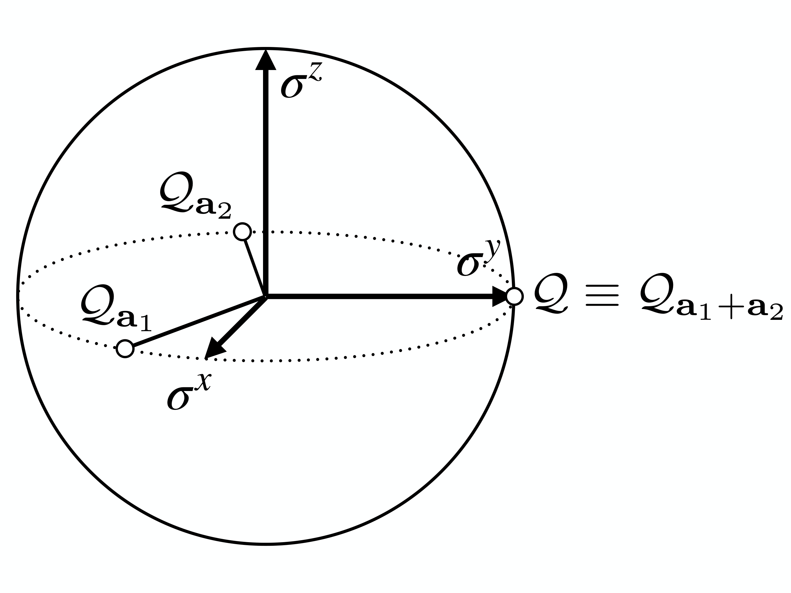

Research
A few selected works are highlighted below: (* = equal contribution)
Generalized Kramers-Wannier Self-Duality in Hopf-Ising Models
In collaboration with: Da-Chuan Lu and Nat Tantivasadakarn
The Kramers-Wannier transformation of the 1+1D transverse-field Ising model exchanges the paramagnetic and ferromagnetic phases and, at criticality, manifests as a non-invertible symmetry. Extending such self-duality symmetries beyond gauging of abelian groups in tensor-product Hilbert spaces has, however, remained challenging. In this work, we construct a generalized 1+1D Ising model based on a finite-dimensional semisimple Hopf algebra H that enjoys an anomaly-free non-invertible symmetry Rep(H). We provide an intuitive diagrammatic formulation of both the Hamiltonian and the symmetry operators using a non-(co)commutative generalization of ZX-calculus built from Hopf-algebraic data. When H is self-dual, we further construct a generalized Kramers-Wannier duality operator that exchanges the paramagnetic and ferromagnetic phases and becomes a non-invertible symmetry at the self-dual point. This enlarged symmetry mixes with lattice translation and, in the infrared, flows to a weakly integral fusion category given by a Z2 extension of Rep(H). Specializing to the Kac-Paljutkin algebra H8, the smallest self-dual Hopf algebra beyond abelian group algebras, we numerically study the phase diagram and identify four of the six Rep(H8)-symmetric gapped phases, separated by Ising critical lines and meeting at a multicritical point. We also realize all six Rep(H8)-symmetric gapped phases on the lattice via the H-comodule algebra formalism, in agreement with the module-category classification of Rep(H8). Our results provide a unified Hopf-algebraic framework for non-invertible symmetries, dualities, and the tensor product lattice models that realize them.

D.C. Lu*, A. Chatterjee* and N. Tantivasadakarn, "Generalized Kramers-Wannier Self-Duality in Hopf-Ising Models", arXiv:2602.10183 [cond-mat.str-el]. [Preprint]
Parity Anomaly from LSM: Exact Valley Symmetries on the Lattice
In collaboration with: Sal Pace, Luke Kim and Shu-Heng Shao
We show that the honeycomb tight-binding model hosts an exact microscopic avatar of its low-energy SU(2) valley symmetry and parity anomaly. Specifically, the SU(2) valley symmetry arises from a collection of conserved, integer quantized charge operators that obey the Onsager algebra. Along with lattice reflection and time-reversal symmetries, this Onsager symmetry has a Lieb-Schultz-Mattis (LSM) anomaly that matches the parity anomaly in the IR. Indeed, we show that any local Hamiltonian commuting with these symmetries cannot have a trivial unique gapped ground state. We study the phase diagram of the simplest symmetric model and survey various deformations, including Haldane's mass term, which preserves only the Onsager symmetry. Our results place the parity anomaly in 2+1D alongside Schwinger's anomaly in 1+1D and Witten's SU(2) anomaly in 3+1D as 't Hooft anomalies that can arise from the Onsager symmetry on the lattice.

S.D. Pace, M.L. Kim, A. Chatterjee and S.-H. Shao, "Parity Anomaly from a Lieb-Schultz-Mattis Theorem: Exact Valley Symmetries on the Lattice", Phys. Rev. Lett. 135, 236501 (2025). [Journal, Preprint]
Quantized axial charge of staggered fermions and the chiral anomaly
In collaboration with: Sal Pace and Shu-Heng Shao
In the 1+1D ultra-local lattice Hamiltonian for staggered fermions with a finite-dimensional Hilbert space, there are two conserved, integer-valued charges that flow in the continuum limit to the vector and axial charges of a massless Dirac fermion with a perturbative anomaly. Each of the two lattice charges generates an ordinary U(1) global symmetry that acts locally on operators and can be gauged individually. Interestingly, they do not commute on a finite lattice and generate the Onsager algebra, but their commutator goes to zero in the continuum limit. The chiral anomaly is matched by this non-abelian algebra, which is consistent with the Nielsen-Ninomiya theorem. We further prove that the presence of these two conserved lattice charges forces the low-energy phase to be gapless, reminiscent of the consequence from perturbative anomalies of continuous global symmetries in continuum field theory. Upon bosonization, these two charges lead to two exact U(1) symmetries in the XY model that flow to the momentum and winding symmetries in the free boson conformal field theory.
A. Chatterjee, S.D. Pace, and S.-H. Shao, "Quantized axial charge of staggered fermions and the chiral anomaly", Phys. Rev. Lett. 134, 021601 (2025). [Journal, Preprint]

Analytic framework for self-dual criticality in Zk gauge theory with matter
In collaboration with: Darius Shi
We study the putative multicritical point in 2+1D Zk gauge theory where the Higgs and confinement transitions meet. The presence of an e-m duality symmetry at this critical point forces anyons with nontrivial braiding to close their gaps simultaneously, giving rise to a critical theory that mixes strong interactions with mutual statistics. An effective U(1)×U(1) gauge theory with a mutual Chern-Simons term at level k is proposed to describe the vicinity of the multicritical point for k≥4. We argue analytically that monopoles are irrelevant in the IR CFT and compute the scaling dimensions of the leading duality-symmetric/anti-symmetric operators. In the large k limit, these scaling dimensions approach 3 – 1/νXY as 1/k2, where νXY is the correlation length exponent of the 3D XY model.
Z.D. Shi and A. Chatterjee, "Analytic framework for self-dual criticality in Zk gauge theory with matter", Phys. Rev. B 112, L081111 (2025). [Journal, Preprint]

Quantum Phases and Transitions in Spin Chains with Non-Invertible Symmetries
In collaboration with: Ömer M. Aksoy and Xiao-Gang Wen
Generalized symmetries often appear in the form of emergent symmetries in low energy effective descriptions of quantum many-body systems. Non-invertible symmetries are a particularly exotic class of generalized symmetries, in that they are implemented by transformations that do not form a group. Such symmetries appear in large families of gapless states of quantum matter and constrain their low-energy dynamics. To provide a UV-complete description of such symmetries, it is useful to construct lattice models that respect these symmetries exactly. In this paper, we discuss two families of one-dimensional lattice Hamiltonians with finite on-site Hilbert spaces: one with (invertible) S3 symmetry and the other with non-invertible Rep(S3) symmetry. Our models are largely analytically tractable and demonstrate all possible spontaneous symmetry breaking patterns of these symmetries. Moreover, we use numerical techniques to study the nature of continuous phase transitions between the different symmetry-breaking gapped phases associated with both symmetries. Both models have self-dual lines, where the models are enriched by so-called intrinsically non-invertible symmetries generated by Kramers-Wannier-like duality transformations. We provide explicit lattice operators that generate these non-invertible self-duality symmetries. We give a SymTO-based classification of self-dual gapped and gapless phases in both models.
A. Chatterjee*, Ö.M. Aksoy*, and X.-G. Wen, "Quantum phases and transitions in spin chains with non-invertible symmetries", SciPost Phys. 17, 115 (2024). [Journal, Preprint]

Emergent generalized symmetry and maximal symmetry-topological-order
In collaboration with: Wenjie Ji and Xiao-Gang Wen
A characteristic property of a gapless liquid state is its emergent symmetry and dual symmetry, associated with the conservation laws of symmetry charges and symmetry defects respectively. These conservation laws, considered on an equal footing, can't be described simply by the representation theory of a group (or a higher group). They are best described in terms of a topological order (TO) with gappable boundary in one higher dimension; we call this the symTO of the gapless state. The symTO can thus be considered a fingerprint of the gapless state. We propose that a largely complete characterization of a gapless state, up to local-low-energy equivalence, can be obtained in terms of its maximal emergent symTO. In this paper, we review the symmetry/topological-order (Sym/TO) correspondence and propose a precise definition of maximal symTO. We discuss various examples to illustrate these ideas. We find that the 1+1D Ising critical point has a maximal symTO described by the 2+1D double-Ising topological order. We provide a derivation of this result using symmetry twists in an exactly solvable model of the Ising critical point. The critical point in the 3-state Potts model has a maximal symTO of double (6,5)-minimal-model topological order. As an example of a noninvertible symmetry in 1+1D, we study the possible gapless states of a Fibonacci anyon chain with emergent double-Fibonacci symTO. We find the Fibonacci-anyon chain without translation symmetry has a critical point with unbroken double-Fibonacci symTO. In fact, such a critical theory has a maximal symTO of double (5,4)-minimal-model topological order. We argue that, in the presence of translation symmetry, the above critical point becomes a stable gapless phase with no symmetric relevant operator.
A. Chatterjee, W. Ji and X.-G. Wen, "Emergent generalized symmetry and maximal symmetry-topological-order", Phys. Rev. B 112, 115142 (2025). [Journal, Preprint]

Holographic theory for continuous phase transitions: the emergence and symmetry protection of gaplessness
In collaboration with: Xiao-Gang Wen
Two global symmetries are holo-equivalent if their algebras of local symmetric operators are isomorphic. A holo-equivalent class of global symmetries is described by a gappable-boundary topological orders (TO) in one higher dimension (called symmetry TO), which leads to a symmetry/topological-order (Symm/TO) correspondence. We establish that:
- For systems with a symmetry described by symmetry TO M, their gapped and gapless states are classified by condensable algebras A, formed by elementary excitations in M with trivial self-/mutual statistics. These so-called A-states can describe symmetry breaking orders, symmetry protected topological orders, symmetry enriched topological orders, gapless critical points, etc., in a unified way.
- The local low-energy properties of an A-state can be calculated from its reduced symmetry TO M/A, using holographic modular bootstrap (holoMB) which takes M/A as an input. Here M/A is obtained from M by condensing excitations in A. Notably, an A-state must be gapless if M/A is nontrivial. This provides a unified understanding of the emergence and symmetry protection of gaplessness that applies to symmetries that are anomalous, higher-form, and/or non-invertible.
- The relations between condensable algebras constrain the structure of the global phase diagram. We find that, for 1 + 1D Z2×Z2' symmetry with mixed anomaly, there is a stable continuous transition (deconfined quantum critical point) between the Z2-breaking-Z2'-symmetric phase and the Z2-symmetric-Z2'-breaking phase. The critical point is the same as a Z4 symmetry breaking critical point.
- 1+1D bosonic systems with S3 symmetry have four gapped phases with unbroken symmetries S3, Z3, Z2, and Z1. We find a duality between two transitions S3 ↔ Z1 and Z3 ↔ Z2: they are either both first order or both (stably) continuous, and in the latter case, they are described by the same conformal field theory (CFT).
- The gapped and gapless states for 1 + 1D bosonic systems with anomalous S3 symmetries are obtained as well. For example, anomalous S3(1) and S3(2) symmetries can have symmetry protected chiral gapless states with only symmetric irrelevant and marginal operators.
A. Chatterjee and X.-G. Wen, "Holographic theory for continuous phase transitions: Emergence and symmetry protection of gaplessness", Phys. Rev. B 108, 075105 (2023). [Journal, Preprint]

Symmetry as a shadow of topological order and a derivation of topological holographic principle
In collaboration with: Xiao-Gang Wen
Symmetry is usually defined via transformations described by a (higher) group. But a symmetry really corresponds to an algebra of local symmetric operators, which directly constrains the properties of the system. In this paper, we point out that the algebra of local symmetric operators contains a special class of extended operators -- transparent patch operators, which reveal the selection sectors and hence the corresponding symmetry. The algebra of those transparent patch operators in n-dimensional space gives rise to a non-degenerate braided fusion n-category, which happens to describe a topological order in one higher dimension (for finite symmetry). Such a holographic theory not only describes (higher) symmetries, it also describes anomalous (higher) symmetries, non-invertible (higher) symmetries (also known as algebraic higher symmetries), and non-invertible gravitational anomalies. Thus, topological order in one higher dimension, replacing group, provides a unified and systematic description of the above generalized symmetries. This is referred to symmetry/topological-order (Symm/TO) correspondence. Our approach also leads to a derivation of topological holographic principle: \emph{boundary uniquely determines the bulk}, or more precisely, the algebra of local boundary operators uniquely determines the bulk topological order. As an application of the Symm/TO correspondence, we show the equivalence between Z2×Z2 symmetry with mixed anomaly and Z4 symmetry, as well as between many other symmetries, in 1-dimensional space.
A. Chatterjee and X.-G. Wen, "Symmetry as a shadow of topological order and a derivation of topological holographic principle", Phys. Rev. B 107, 155136 (2023). [Journal, Preprint]